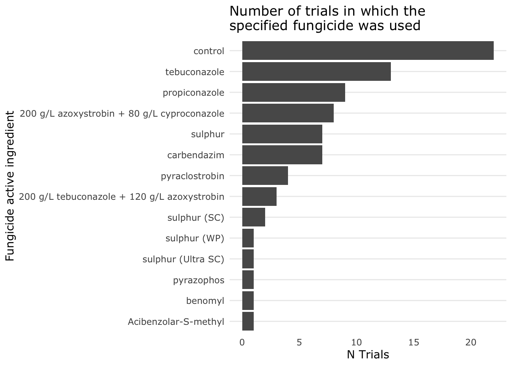

2 Trials considered for inclusion in meta-analysis
Trials testing fungicide efficacy on powdery mildew in mungbean in the Grains Research and Development Corporation (GRDC) northern grains region were sourced for a meta-analysis.
Data were collected from a number of researchers from the Department of Agriculture and Fisheries (DAF), the University of Southern Queensland (USQ) and the National Growers Association (NGA). We would like to acknowledge in particular Professor Malcolm Riley’s and Dr. Sue Thompson’s effort in establishing and coordinating early field trials between 2010 and 2014 and GRDC for funding many of the trials which were included in this meta-analysis.
2.0.1 Load required R packages
## Loading required package: pacman## Warning in library(package, lib.loc = lib.loc, character.only = TRUE,
## logical.return = TRUE, : there is no package called 'pacman'## Installing package into '/Users/runner/work/_temp/Library'
## (as 'lib' is unspecified)## also installing the dependency 'remotes'## Installing package into '/Users/runner/work/_temp/Library'
## (as 'lib' is unspecified)## also installing the dependencies 'colorspace', 'sys', 'ps', 'farver', 'labeling', 'munsell', 'RColorBrewer', 'viridisLite', 'askpass', 'rematch', 'prettyunits', 'processx', 'backports', 'ellipsis', 'generics', 'assertthat', 'blob', 'DBI', 'lifecycle', 'R6', 'tidyselect', 'vctrs', 'withr', 'gtable', 'isoband', 'scales', 'Rcpp', 'pkgconfig', 'curl', 'openssl', 'fansi', 'utf8', 'clipr', 'BH', 'cpp11', 'cellranger', 'progress', 'callr', 'fs', 'selectr', 'broom', 'cli', 'crayon', 'dbplyr', 'dplyr', 'forcats', 'ggplot2', 'haven', 'hms', 'httr', 'lubridate', 'modelr', 'pillar', 'purrr', 'readr', 'readxl', 'reprex', 'rstudioapi', 'rvest', 'tibble', 'tidyr', 'xml2'##
## tidyverse installed## Installing package into '/Users/runner/work/_temp/Library'
## (as 'lib' is unspecified)## also installing the dependencies 'systemfonts', 'webshot', 'svglite'##
## kableExtra installed## Installing package into '/Users/runner/work/_temp/Library'
## (as 'lib' is unspecified)## also installing the dependencies 'lazyeval', 'gridExtra', 'crosstalk', 'htmlwidgets', 'png', 'raster', 'sp', 'viridis', 'leaflet.providers'##
## leaflet installed## Installing package into '/Users/runner/work/_temp/Library'
## (as 'lib' is unspecified)## also installing the dependency 'rprojroot'##
## here installed## Loading required package: theme.usq## Warning in library(package, lib.loc = lib.loc, character.only = TRUE,
## logical.return = TRUE, : there is no package called 'theme.usq'## Using bundled GitHub PAT. Please add your own PAT to the env var `GITHUB_PAT`## Downloading GitHub repo adamhsparks/theme.usq@HEAD## Installing 3 packages: Rttf2pt1, extrafontdb, extrafont## Installing packages into '/Users/runner/work/_temp/Library'
## (as 'lib' is unspecified)## Running `R CMD build`...## Installing package into '/Users/runner/work/_temp/Library'
## (as 'lib' is unspecified)
2.1 Criteria for inclusion in meta-analysis
- A field trial testing the efficacy of fungicide on powdery mildew afflicted mungbean plants in eastern Australia.
- Trial data needed to include:
- Fungicide active ingredients.
- A demethylase inhibitor (DMI) fungicide.
- The date at which powdery mildew first appeared in the trial.
- Disease severity at the end of the growing seasons.
- Fungicide application dates.
- Fungicide dose.
- Crop yield.
- Treatment means and accompanying variance.
- Fungicide active ingredients.
2.2 Import data
Import data from trials which the raw data was available
PM_MB_raw <-
rbind(
read.csv(
here("cache/2010 PMmung Hermitage means.csv"),
stringsAsFactors = FALSE
),
read.csv(here("cache/2011 PMmung Herm means.csv"), stringsAsFactors = FALSE),
read.csv(
here("cache/2011 PMmung Kingaroy means.csv"),
stringsAsFactors = FALSE
),
read.csv(here("cache/AM1305_Goolhi_means.csv"), stringsAsFactors = FALSE),
read.csv(
here("cache/AM1304-MarysMount_means.csv"),
stringsAsFactors = FALSE
),
read.csv(
here("cache/AM1303-Premer-Disease_means.csv"),
stringsAsFactors = FALSE
),
read.csv(
here("cache/BB1305_Millmerran_means.csv"),
stringsAsFactors = FALSE
),
read.csv(here("cache/Herm_16_means.csv"), stringsAsFactors = FALSE),
read.csv(here("cache/King_16_means.csv"), stringsAsFactors = FALSE),
read.csv(here("cache/Fogerty_17_mean.csv"), stringsAsFactors = FALSE),
read.csv(here("cache/Hermitage_17_mean.csv"), stringsAsFactors = FALSE),
read.csv(here("cache/Wellcamp_18_mean.csv"), stringsAsFactors = FALSE),
read.csv(here("cache/Hermitage_19_mean.csv"), stringsAsFactors = FALSE)
)
write.csv(
PM_MB_raw,
file = here("cache/PM_Mungbean_SummaryOfTrialsWithRawData"),
row.names = FALSE
)Import dataset of manual entries
Import dataset which were manually entered from trial reports
Bind raw and transcribed datasets.
2.3 Summary of all trials
PM_MB_dat %>%
arrange(year, location) %>%
group_by(trial_ref) %>%
summarise(
Year = unique(year),
Location = unique(location),
`Replicates per treatment` = if (all(replicates[1] == replicates)) {
as.character(replicates[1])
} else{
as.character(paste(min(replicates), "-", max(replicates)))
},
`Trial design` = unique(trial_design),
`Planting date` = unique(planting_date),
`First sign of disease` = unique(first_sign_disease),
`Fungicide treatments` = length(n_treatment),
) %>%
arrange(Year) %>%
kable(
caption = "Description of Experiments",
align = "c",
col.names = c(
"Unique Trial\nReference",
"Year",
"Location",
"Replicates\nper treatments",
"Trial design",
"Planting date",
"First sign\nof disease",
"Fungicide\n treatments"
)
) %>%
kable_styling(fixed_thead = TRUE, full_width = TRUE) %>%
column_spec(c(3, 5:6), width = "3cm") %>%
scroll_box(height = "500px") | Unique Trial Reference | Year | Location | Replicates per treatments | Trial design | Planting date | First sign of disease | Fungicide treatments |
|---|---|---|---|---|---|---|---|
| mung0001/01 | 2001 | Bongeen_1 | 5 | RB | 2001-02-11 | 2001-03-16 | 7 |
| mung0102/01 | 2002 | Bongeen_2 | 3 | RB | NA | 2002-02-07 | 12 |
| mung0102/02 | 2002 | Hermitage | 3 - 6 | RB | 2002-01-29 | 2002-03-19 | 13 |
| mung0102/03 | 2002 | Hermitage | 3 - 6 | RB | 2002-02-12 | 2002-04-04 | 13 |
| mung0102/04 | 2002 | Kingaroy | 8 | RB | 2002-02-12 | 2002-04-05 | 3 |
| mung0304/01 | 2002 | Redvale | 7 | RB | 2004-02-21 | 2004-03-23 | 3 |
| mung0910/01 | 2010 | Hermitage | 3 | RB | 2010-01-22 | 2010-03-18 | 15 |
| mung0910/02 | 2010 | Kingaroy | 3 | RB | 2010-01-29 | 2010-03-26 | 15 |
| mung1011/01 | 2011 | Hermitage | 3 - 6 | RCB | 2011-01-24 | 2011-03-28 | 12 |
| mung1011/02 | 2011 | Kingaroy | 3 | RCB | 2011-02-02 | 2011-03-22 | 20 |
| mung1112/01 | 2012 | Gatton | 3 | RCB | 2012-02-20 | 2012-04-02 | 15 |
| mung1112/02 | 2012 | Kingaroy | 3 | RCB | 2012-02-03 | 2012-03-12 | 15 |
| AM1303 | 2013 | Premer | 3 | RCB | 2012-12-28 | 2013-02-28 | 11 |
| AM1304 | 2013 | Marys Mount | 3 - 4 | RCB | 2012-12-24 | 2013-03-16 | 11 |
| AM1305 | 2013 | Goolhi | 4 | RB | 2013-01-23 | 2013-03-25 | 11 |
| BB1305 | 2013 | Millmerran | 4 | RCB | 2013-01-12 | 2013-03-13 | 11 |
| mung1415/01 | 2015 | Hermitage | 5 | RCB | 2015-01-19 | 2015-03-16 | 6 |
| mung1415/02 | 2015 | Dalby | 5 | RCB | 2015-01-06 | 2015-03-02 | 1 |
| mung1516/01 | 2016 | Hermitage | 4 | RCB | 2016-02-03 | 2016-03-08 | 7 |
| mung1516/02 | 2016 | Kingaroy | 4 | RCB | 2016-02-11 | 2016-03-09 | 7 |
| mung1516/03 | 2016 | Emerald | 4 | RCB | 2016-02-12 | 2016-03-17 | 7 |
| mung1617/01 | 2017 | Hermitage | 3 | RCB | 2017-02-13 | 2017-03-24 | 54 |
| mung1617/02 | 2017 | Missen Flats | 3 | RCB | 2017-01-27 | 2017-03-07 | 54 |
| mung1718/01 | 2018 | Wellcamp | 3 | RCB | 2018-02-13 | 2018-03-21 | 24 |
| mung1819/01 | 2019 | Hermitage | 6 | RCB | 2018-02-04 | 2018-04-12 | 4 |
| mung1819/02 | 2019 | Hermitage | 5 - 6 | RCB | 2018-02-18 | 2018-04-12 | 4 |
2.3.1 Experiment locations
Trial locations occurring in the GRDC Northern Grains Region.
2.4 Subset data to selection criteria
Let’s apply the selection criteria our dataset.
All trials identified for this meta-analysis reported:
- fungicide active ingredient,
- dose,
- first sign of disease.
Therefore no trials need to be removed to satisfy these criteria.
Retain trials including: Yield
Three trials omitted due to not reporting yields
## trial_ref year location
## 1 mung0102/01 2002 Bongeen_2
## 2 mung0102/02 2002 Hermitage
## 3 mung0102/03 2002 HermitageRetain trials including: Disease severity
One more was trial removed as it did not report disease severity.
## trial_ref year location
## 1 mung1415/02 2015 Dalby
Retain trials including: fungicide application dates
No trials from our subset need to be removed for not reporting fungicide application dates.
PM_MB_dat %>%
group_by(trial_ref) %>%
summarise(No_Record_Of_Fungicide_Application_Dates = all(is.na(fungicide_application_1)),
.groups = 'drop') %>%
filter(No_Record_Of_Fungicide_Application_Dates)## # A tibble: 0 x 2
## # … with 2 variables: trial_ref <chr>,
## # No_Record_Of_Fungicide_Application_Dates <lgl>
Retain trials including: fungicide dose
No trials from our subset need to be removed for not reporting fungicide dose.
PM_MB_dat %>%
group_by(trial_ref) %>%
summarise(No_Record_Of_Fungicide_Dose = all(is.na(dose_ai.ha)),
.groups = 'drop') %>%
filter(No_Record_Of_Fungicide_Dose)## # A tibble: 0 x 2
## # … with 2 variables: trial_ref <chr>, No_Record_Of_Fungicide_Dose <lgl>
Exclude fungicides tested in too few trials
The meta-analysis should be focused on fungicides with the same mode of action.
Fungicides from the best represented group will be retained.
PM_MB_dat %>%
group_by(fungicide_ai, trial_ref) %>%
summarise() %>%
count(sort = TRUE) %>%
rename(Trials = n) %>%
ggplot(aes(x = reorder(fungicide_ai, Trials), y = Trials)) +
xlab("Fungicide active ingredient") +
ylab("N Trials") +
geom_col() +
scale_fill_usq() +
ggtitle(label = "Number of trials in which the\nspecified fungicide was used") +
scale_colour_usq() +
coord_flip()## `summarise()` has grouped output by 'fungicide_ai'. You can override using the `.groups` argument.
The demethylation inhibitors (DMI), tebuconazole and propiconazole, are used in the highest frequencies. The DMIs have the same fungicide mode of action and are good candidates to be pooled in the meta-analysis.
Amistar Xtra and Custodia both contain strobilurin and triazole, however, because they contain differing dose ratios (inverted) pooling may not be appropriate therefore they will be removed.
Retain only fungicides with DMI action
DMI_Trials <-
PM_MB_dat %>%
filter(fungicide_ai == "tebuconazole" |
fungicide_ai == "propiconazole") %>%
distinct(trial_ref) %>%
pull()
PM_MB_dat <-
PM_MB_dat[PM_MB_dat$trial_ref %in% DMI_Trials, ]Now remove any non-DMI treatments or controls
PM_MB_dat <-
PM_MB_dat %>%
filter(
fungicide_ai == "control" |
fungicide_ai == "tebuconazole" |
fungicide_ai == "propiconazole"
)
2.5 Defining spray schedule variable
First are going to calculate the time between the first sign of disease and the fungicide applications.
# collective data
PM_MB_dat %<>%
mutate(fungicide_timing_1 = fungicide_application_1 - first_sign_disease) %>%
mutate(fungicide_timing_2 = fungicide_application_2 - fungicide_application_1) %>%
mutate(fungicide_timing_3 = fungicide_application_3 - fungicide_application_2)To ensure sufficient number of replicates, treatments were binned by the first fungicide application date into three categorical variables relating to when the first fungicide application was made, relative to the first sign of disease.
These categorical variables are named:
- Early: First fungicide application was prior to first sign of disease.
- Recommended: First fungicide application was applied on the day powdery mildew was observed, or within three days of first sign.
- Late: First fungicide application was four or more days after first sign of disease being observed.
The number of follow-up sprays need also be defined.
data.frame(
TreatmentName = c(
"Early",
"Recommended",
"Late",
"EarlyPlus",
"RecommendedPlus",
"LatePlus"
),
n_sprays = rep(c("Single", "Two - Three"), each = 3),
DaysRelativeToFirstSign = c(
"Prior to first sign of Powdery Mildew",
"1 - 3 days after first sign of Powdery Mildew",
"7 - 8 days after first sign of Powdery Mildew"
)
) %>%
kable()| TreatmentName | n_sprays | DaysRelativeToFirstSign |
|---|---|---|
| Early | Single | Prior to first sign of Powdery Mildew |
| Recommended | Single | 1 - 3 days after first sign of Powdery Mildew |
| Late | Single | 7 - 8 days after first sign of Powdery Mildew |
| EarlyPlus | Two - Three | Prior to first sign of Powdery Mildew |
| RecommendedPlus | Two - Three | 1 - 3 days after first sign of Powdery Mildew |
| LatePlus | Two - Three | 7 - 8 days after first sign of Powdery Mildew |
Simplify the clusters for the data-set
PM_MB_dat <- PM_MB_dat %>%
mutate(
spray_management = case_when(
fungicide_timing_1 < 0 &
is.na(fungicide_application_2) &
is.na(fungicide_application_3) ~ "Early",
fungicide_timing_1 >= 0 &
fungicide_timing_1 < 4 &
is.na(fungicide_application_2) &
is.na(fungicide_application_3) ~ "Recommended",
fungicide_timing_1 >= 4 &
is.na(fungicide_application_2) &
is.na(fungicide_application_3) ~ "Late",
fungicide_timing_1 < 0 &
!is.na(fungicide_application_2) ~ "Early_plus",
fungicide_timing_1 >= 0 &
fungicide_timing_1 < 4 &
!is.na(fungicide_application_2) ~ "Recommended_plus",
fungicide_timing_1 >= 4 &
!is.na(fungicide_application_2) ~ "Late_plus",
TRUE ~ "Other"
)
)
PM_MB_dat[PM_MB_dat$fungicide_ai == "control",
c(
"fungicide_timing_1",
"fungicide_timing_2",
"fungicide_timing_3",
"spray_management"
)] <- "control"Now to view the number break-down of the spray_management treatments in the yield and disease severity data-sets
##
## control Early Early_plus Late
## 40 13 5 17
## Late_plus Recommended Recommended_plus
## 20 32 46‘Early_plus’ treatments are few in number, these treatments will have too few comparisons with other treatments in the meta-analysis to provide accurate results. Therefore we will remove ‘Early_plus’ from the analysis.
PM_MB_dat <-
PM_MB_dat %>%
filter(spray_management != "Early_plus") %>%
select(-c(fungicide_timing_1, # remove the following columns which no longer have use
fungicide_timing_2,
fungicide_timing_3,
fungicide_application_1,
fungicide_application_2,
fungicide_application_3,
fungicide_application_4,
fungicide_application_5,
fungicide_application_6,
fungicide_application_7,
))
2.6 Identify variance
We need variance accompanying the mean observations for each treatment to successfully undertake a meta-analysis. Lets investigate which of the included trials included variance for both response variables of interest, yield and disease severity.
PM_MB_dat %>%
mutate(MA_analysis = case_when(
is.na(yield_error & disease_error) == FALSE ~ "Yield and Disease",
is.na(yield_error) == FALSE &
is.na(disease_error) ~ "Yield",
is.na(disease_error) == FALSE &
is.na(yield_error) ~ "Disease",
TRUE ~ "Nil"
)) %>%
distinct(trial_ref, location, year, MA_analysis) %>%
arrange(year) %>%
kable()| trial_ref | year | location | MA_analysis |
|---|---|---|---|
| mung1011/01 | 2011 | Hermitage | Yield and Disease |
| mung1011/02 | 2011 | Kingaroy | Yield and Disease |
| mung1112/01 | 2012 | Gatton | Disease |
| mung1112/02 | 2012 | Kingaroy | Yield and Disease |
| AM1305 | 2013 | Goolhi | Yield and Disease |
| AM1304 | 2013 | Marys Mount | Yield and Disease |
| AM1303 | 2013 | Premer | Yield and Disease |
| BB1305 | 2013 | Millmerran | Yield and Disease |
| mung1415/01 | 2015 | Hermitage | Yield and Disease |
| mung1516/01 | 2016 | Hermitage | Yield |
| mung1516/02 | 2016 | Kingaroy | Yield |
| mung1516/03 | 2016 | Emerald | Nil |
| mung1617/02 | 2017 | Missen Flats | Yield and Disease |
| mung1617/01 | 2017 | Hermitage | Yield and Disease |
| mung1718/01 | 2018 | Wellcamp | Yield and Disease |
| mung1819/01 | 2019 | Hermitage | Yield and Disease |
| mung1819/02 | 2019 | Hermitage | Yield and Disease |
Remove one trial in Emerald which did not report disease variance or yield variance.
# Remove trials without variance for both Disease and yield for data_set `PM_MB_dat
PM_MB_dat <-
PM_MB_dat %>%
mutate(contains_var = case_when(
is.na(yield_error) &
is.na(disease_error) ~ NA_character_,
TRUE ~ trial_ref)) %>%
filter(trial_ref %in% contains_var) %>%
select(-contains_var) Following an inspection of the yield and disease variance we determined imputation was not suitable and therefore we must exclude trials that did not report variance. For each analysis, yield and disease severity a separate data-set will be created, including only trials that report variance for the respective response variable
One trial will be removed from the yield data set PM_dat_Y for not reporting yield variance.
PM_MB_dat %>%
mutate(No_Var = is.na(yield_error)) %>%
filter(No_Var == TRUE) %>%
distinct(trial_ref, year, location)## trial_ref year location
## 1 mung1112/01 2012 GattonPM_dat_Y <-
PM_MB_dat %>%
mutate(contains_var = case_when(
is.na(yield_error) ~ NA_character_,
TRUE ~ trial_ref)) %>%
filter(trial_ref %in% contains_var) %>%
select(-contains_var)Two more trials will be removed for our disease severity data set PM_dat_D for not reporting yield variance.
PM_MB_dat %>%
mutate(No_Var = is.na(disease_error)) %>%
filter(No_Var == TRUE) %>%
distinct(trial_ref, year, location)## trial_ref year location
## 1 mung1516/01 2016 Hermitage
## 2 mung1516/02 2016 KingaroyPM_dat_D <-
PM_MB_dat %>%
mutate(contains_var = case_when(
is.na(disease_error) ~ NA_character_,
TRUE ~ trial_ref)) %>%
filter(trial_ref %in% contains_var) %>%
select(-contains_var)
2.7 Standardise Variance
All the variance types need to be converted to sample variance. First we will start by standardising yield variance according to the method reported by Ngugi et.al (2011).
2.7.1 Yield variance standardisation
2.7.2 Disease severity variance standardisation
PM_dat_D <-
PM_dat_D %>%
mutate(
vi =
case_when(
D_error_type == "stdev" ~ disease_error ^ 2,
D_error_type == "lsd (P=0.05)" ~
(replicates * ((disease_error / 1.96) ^ 2) / 2)
),
id = row_number(),
spray_management = fct_relevel(spray_management, sort)
) %>%
select(-c(disease_error,
D_error_type))2.7.2.1 Save the cleaned data
write.csv(PM_dat_Y, file = "cache/PM_yield_clean_data.csv", row.names = FALSE)
write.csv(PM_dat_D, file = "cache/PM_disease_clean_data.csv", row.names = FALSE)
write.csv(PM_MB_dat, file = "cache/PM_MB_clean_data.csv", row.names = FALSE)
save(PM_MB_dat, PM_dat_D, PM_dat_Y, file = here("cache/ImportDataAndSelectTrials01.Rdata"))